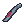
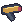
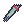
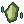
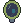
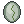
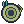
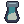

Meridian / card frames and item icons Three original nine-slice plates, matching Incident / Salvage / Anomaly symbols at 16px and 24px, and all 20 first-wave item icons at 24px. Text below comes from actual content data; the PNGs contain no titles or rules text.
Frame corners remain exact 2×; stretchable edge bands and centres are uniform colours. Larger object silhouettes carry item identity; kind names and shapes supplement colour. This is an asset review, not implemented controller/game UI or a physical-TV test.
Kind symbols · exact 2× Incident Salvage Anomaly
TV review · native 1920×1080 Pan inside each panel on phones. TV cards use a 30px body font with 38px titles; content is live HTML text.
DERELICT: ISV MERIDIAN / CARD REVIEW A patch of air so cold your breath freezes on your visor.
0–1 You back away, shaking. Lose 1 nerve step.
4+ You stand in it until it's gone. Gain 1 nerve step.
Gauze, sealant, and one good painkiller.
Use: Patch up Gain 2 physical steps. Single use.
Crayon: the ship, and a figure waving from inside. There were no children aboard.
Long choice card · full live text LONG CHOICE CARD / SAME 30px FONT A crew member floats in the corridor, face hidden by a cracked visor.
Search it You turn it towards you.
0–2 Under the visor is your own face. Then it isn't. Lose 1 mental step.
3+ A keycard in its glove, still warm. Draw a Salvage card.
Move on You give it a wide berth. It turns to watch you go.
All item icons · 3× at 1080p SALVAGE / ANOMALY / TWENTY AUTHORED OBJECTS 
Crowbar Salvage Med Kit Salvage Calm Tabs Salvage Mag Boots Salvage Diagnostic Slate Salvage 
Flare Gun Salvage 
Adrenal Stim Salvage Hand Lamp Salvage 
Humming Shard Anomaly 
Black Mirror Anomaly 
Warm Egg Anomaly Stopped Watch Anomaly Unknown Star Chart Anomaly 
Singing Wire Anomaly Bone Key Anomaly 
Sealed Vial Anomaly Waterlogged Logbook Anomaly Child's Drawing Anomaly Cold Coin Anomaly Pocket of Quiet Anomaly Every real card at phone and TV sizes Kind All kinds incident salvage anomaly Cold Spot Phone A patch of air so cold your breath freezes on your visor.
0–1 You back away, shaking. Lose 1 nerve step.
4+ You stand in it until it's gone. Gain 1 nerve step.
TV · 30px body text A patch of air so cold your breath freezes on your visor.
0–1 You back away, shaking. Lose 1 nerve step.
4+ You stand in it until it's gone. Gain 1 nerve step.
Loose Grating Phone A floor grate tips under your boot.
0–1 You go down hard on one knee. Lose 1 physical step.
2+ You catch the edge and step clear.
TV · 30px body text A floor grate tips under your boot.
0–1 You go down hard on one knee. Lose 1 physical step.
2+ You catch the edge and step clear.
Jammed Bulkhead Phone A pressure door has stopped halfway down, grinding.
0–2 It drops the last inch onto your arm. Lose 1 physical step. End your turn.
3+ You heave it up and wedge it. Gain 1 brawn step.
TV · 30px body text A pressure door has stopped halfway down, grinding.
0–2 It drops the last inch onto your arm. Lose 1 physical step. End your turn.
3+ You heave it up and wedge it. Gain 1 brawn step.
Garbled Log Phone A wall panel plays a voice log. The words run backwards.
0–1 You can't stop hearing it. Lose 1 mental step.
4+ Reversed, it gives a locker code. Gain 1 tech step. Draw a Salvage card.
TV · 30px body text A wall panel plays a voice log. The words run backwards.
0–1 You can't stop hearing it. Lose 1 mental step.
4+ Reversed, it gives a locker code. Gain 1 tech step. Draw a Salvage card.
Sparking Conduit Phone Exposed wiring arcs across the passage at chest height.
0–1 It finds you. Lose 2 physical steps.
2+ You time it and slip under.
TV · 30px body text Exposed wiring arcs across the passage at chest height.
0–1 It finds you. Lose 2 physical steps.
2+ You time it and slip under.
Tool Cache Phone A maintenance locker with a keypad, still powered.
0–2 Three wrong tries and it locks for good.
3+ It clicks open. Draw a Salvage card.
TV · 30px body text A maintenance locker with a keypad, still powered.
0–2 Three wrong tries and it locks for good.
3+ It clicks open. Draw a Salvage card.
Someone Was Here Phone A half-eaten ration bar on a console. It's still soft.
0–1 You freeze, listening, for far too long. Lose 1 nerve step. End your turn.
4+ Whoever it was, you're ready. Gain 1 mental step.
TV · 30px body text A half-eaten ration bar on a console. It's still soft.
0–1 You freeze, listening, for far too long. Lose 1 nerve step. End your turn.
4+ Whoever it was, you're ready. Gain 1 mental step.
Hull Groan Phone The whole ship lurches and throws you into a bulkhead.
0–1 Something cracks. Hopefully the suit. Lose 1 physical step.
2+ You brace and ride it out.
TV · 30px body text The whole ship lurches and throws you into a bulkhead.
0–1 Something cracks. Hopefully the suit. Lose 1 physical step.
2+ You brace and ride it out.
Gravity Flicker Phone Gravity cuts out for three long seconds, then slams back.
0–1 You hit the deck from head height. Lose 1 physical step.
4+ You ride it like a pro. Gain 1 agility step.
TV · 30px body text Gravity cuts out for three long seconds, then slams back.
0–1 You hit the deck from head height. Lose 1 physical step.
4+ You ride it like a pro. Gain 1 agility step.
Old Photo Phone Taped inside a locker: a photo of this crew. Your crew.
0–2 You can't remember it being taken. Lose 2 nerve steps.
3+ Someone is playing games. Fine. Gain 1 mental step.
TV · 30px body text Taped inside a locker: a photo of this crew. Your crew.
0–2 You can't remember it being taken. Lose 2 nerve steps.
3+ Someone is playing games. Fine. Gain 1 mental step.
Drifting Body Phone A crew member floats in the corridor, face hidden by a cracked visor.
Search it You turn it towards you.
0–2 Under the visor is your own face. Then it isn't. Lose 1 mental step.
3+ A keycard in its glove, still warm. Draw a Salvage card.
Move on You give it a wide berth. It turns to watch you go.
TV · 30px body text A crew member floats in the corridor, face hidden by a cracked visor.
Search it You turn it towards you.
0–2 Under the visor is your own face. Then it isn't. Lose 1 mental step.
3+ A keycard in its glove, still warm. Draw a Salvage card.
Move on You give it a wide berth. It turns to watch you go.
Open Channel Phone Your radio crackles. Someone is asking for help from the deck below.
0–2 Static, then slow breathing. Lose 1 mental step.
3+ Directions, clear and calm. You follow them to the lift. Move to Central Lift.
Switch it off You turn it off. Your hands are steady.
TV · 30px body text Your radio crackles. Someone is asking for help from the deck below.
0–2 Static, then slow breathing. Lose 1 mental step.
3+ Directions, clear and calm. You follow them to the lift. Move to Central Lift.
Switch it off You turn it off. Your hands are steady.
Crowbar Phone Heavy, honest and older than the ship.
TV · 30px body text Heavy, honest and older than the ship.
Med Kit Phone Gauze, sealant, and one good painkiller.
Use: Patch up Gain 2 physical steps. Single use.
TV · 30px body text Gauze, sealant, and one good painkiller.
Use: Patch up Gain 2 physical steps. Single use.
Calm Tabs Phone Prescription. Not yours.
Use: Take one Gain 2 mental steps. Single use.
TV · 30px body text Prescription. Not yours.
Use: Take one Gain 2 mental steps. Single use.
Mag Boots Phone They hold you to the deck when the deck stops holding you.
TV · 30px body text They hold you to the deck when the deck stops holding you.
Diagnostic Slate Phone Talks to any system that will still talk.
TV · 30px body text Talks to any system that will still talk.
Flare Gun Phone Six flares. The dark is smaller with one in your hand.
TV · 30px body text Six flares. The dark is smaller with one in your hand.
Adrenal Stim Phone A single autoinjector. Tastes like copper.
Use: Inject Gain 3 moves. Single use.
TV · 30px body text A single autoinjector. Tastes like copper.
Use: Inject Gain 3 moves. Single use.
Hand Lamp Phone A good beam. It shows you the way before you need it.
Use: Light the way Gain 1 move.
TV · 30px body text A good beam. It shows you the way before you need it.
Use: Light the way Gain 1 move.
Humming Shard Phone It's warm, and it hums when you think about machines.
TV · 30px body text It's warm, and it hums when you think about machines.
Black Mirror Phone It shows the room behind you, a second late.
Use: Look into it Gain 1 nerve step. Lose 1 physical step.
TV · 30px body text It shows the room behind you, a second late.
Use: Look into it Gain 1 nerve step. Lose 1 physical step.
Warm Egg Phone Pale, leathery, the size of a fist. Sometimes it kicks.
TV · 30px body text Pale, leathery, the size of a fist. Sometimes it kicks.
Stopped Watch Phone Every hand points straight up.
Use: Wind it Gain 3 moves. Single use.
TV · 30px body text Every hand points straight up.
Use: Wind it Gain 3 moves. Single use.
Unknown Star Chart Phone Unknown Star Chart Anomaly
None of these stars exist. Looking at it makes you calm.
TV · 30px body text Unknown Star Chart Anomaly
None of these stars exist. Looking at it makes you calm.
Singing Wire Phone A coil of wire that sings a note just before you fall.
TV · 30px body text A coil of wire that sings a note just before you fall.
Bone Key Phone It fits no lock you've seen. It pulls towards the reactor.
Use: Follow its pull Move to Reactor Core.
TV · 30px body text It fits no lock you've seen. It pulls towards the reactor.
Use: Follow its pull Move to Reactor Core.
Sealed Vial Phone Silver liquid that moves against the tilt.
Use: Drink it Gain 1 physical step. Gain 1 mental step. Single use.
TV · 30px body text Silver liquid that moves against the tilt.
Use: Drink it Gain 1 physical step. Gain 1 mental step. Single use.
Waterlogged Logbook Phone Waterlogged Logbook Anomaly
There is no water aboard. The pages are soaked.
Use: Read a page Gain 1 tech step. Lose 1 nerve step.
TV · 30px body text Waterlogged Logbook Anomaly
There is no water aboard. The pages are soaked.
Use: Read a page Gain 1 tech step. Lose 1 nerve step.
Child's Drawing Phone Crayon: the ship, and a figure waving from inside. There were no children aboard.
TV · 30px body text Crayon: the ship, and a figure waving from inside. There were no children aboard.
Cold Coin Phone Heads on both sides. Different faces.
Use: Flip it Draw a Salvage card. Single use.
TV · 30px body text Heads on both sides. Different faces.
Use: Flip it Draw a Salvage card. Single use.
Pocket of Quiet Phone A sealed bag. Inside, the alarms can't reach you.
Use: Open it Gain 2 mental steps. Single use.
TV · 30px body text A sealed bag. Inside, the alarms can't reach you.
Use: Open it Gain 2 mental steps. Single use.